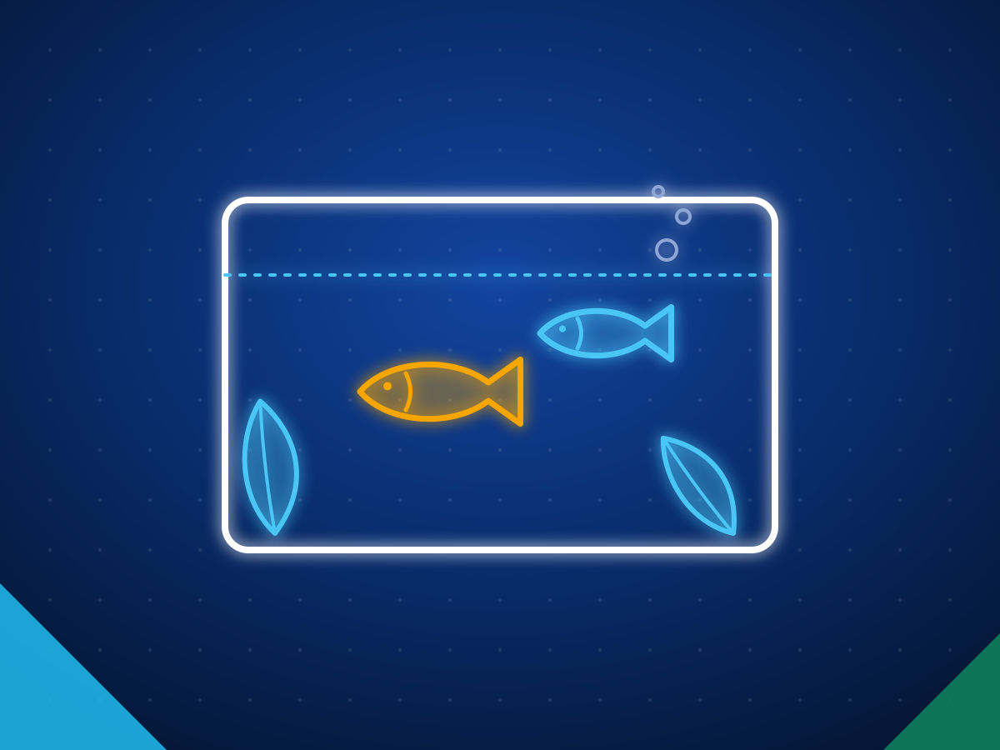

Ornamental fish exporters in Sri Lanka: aquarium fish wholesale
Sri Lanka exports ornamental fish to more than 68 countries through about 85 active exporters, according to the Export Development Board. Freshwater fish led by guppies are bred on farms all year, while marine fish and invertebrates are mostly collected by divers. The US took about 41% of the US$24.46 million exported in 2024. Exports fell 7.6% to US$22.6 million in 2025 and are down 26.71% in the first nine months of 2026, so check each exporter's current capacity before you plan volumes.
Last reviewed 27 October 2026. Sources are linked next to each fact. We do not name buyers.

- US$22.6M
- ornamental fish exports in 2025, down 7.6%
- 68+
- countries Sri Lankan exporters ship to
- 111
- ornamental fish species in Sri Lanka
Sources: Export Development Board, 2025 export performance and January to September 2026 (via Newswire).
Ornamental fish from Sri Lanka at a glance
| Main products | Farm bred freshwater fish led by guppies; marine fish; marine invertebrates such as anemones, shrimps, crabs and starfish |
|---|---|
| Largest markets in 2024 | US (about 41%), China, Australia, UK, Germany, Saudi Arabia, Canada, UAE |
| Documents per shipment | NAQDA health certificate; animal quarantine and fisheries permits; CITES papers for listed species |
| Watch for | Falling export volumes and export restrictions on some live species |
What Sri Lankan exporters supply
| Product | HS code |
|---|---|
| Live ornamental freshwater fish: guppy, platy, molly, swordtail, tetras, angelfish | 0301.11 |
| Live ornamental fish, marine and brackish | 0301.19 |
| Live marine invertebrates: shrimps, crabs, anemones, starfish | 0306 and 0308 |
| Aquarium and aquaculture feed | 2309.90 |
HS codes at heading or six digit level. Confirm the national tariff line in your market with your customs broker.
Also traded as: aquarium fish, tropical fish, guppies, marine aquarium fish.
Why buyers source ornamental fish from Sri Lanka
- Sri Lanka has 111 ornamental fish species across freshwater, brackish and marine habitats. EDB ornamental fish report 2025
- Exporters ship to more than 68 countries; the Export Development Board counts about 85 active exporters. EDB ornamental fish report 2025
- The tropical climate allows freshwater fish to be bred all year, by small and medium farms. Guppies are the largest line. EDB ornamental fish report 2025
- Exporters must obtain health certificates from NAQDA, which also trains farmers in breeding and farm management. EDB ornamental fish report 2025
- The ornamental fish industry in Sri Lanka has a history of nearly 100 years. EDB
Certifications and standards to ask for
- NAQDA health certificate. Required for every ornamental fish export.
- Animal quarantine and fisheries permits. Listed in the Export Development Board's export procedure.
- Department of Fisheries certificate. Needed for live species whose export is restricted.
- CITES permits. Needed for listed species, which matters for some marine fish and invertebrates.
Know this before you buy
- Exports are falling: down 7.6% to US$22.6 million in 2025. EDB
- Ornamental fish exports were down 26.71% in January to September 2026. EDB via Newswire
- Marine fish and invertebrates are mostly wild collected, and the Export Development Board warns that over collection can deplete wild stocks. EDB ornamental fish report 2025
- Some live species, including endemic fish, are restricted for export. Do not expect endemic species to be freely available. EDB
Questions to ask a Sri Lankan ornamental fish exporter
- Which species are farm bred and which are wild collected?
- What is your dead on arrival policy and how are claims settled?
- Can you share a current stock list with sizes and weekly volumes?
- How do you pack, and how long is the door to door transit to my airport?
- Do any of the species need CITES papers or a restricted species certificate?
How we help you source ornamental fish
Tell us the spec
Product, grade, quantity, packing, destination port, the certificates you need and when you need the first shipment.
We shortlist exporters
We match you with Sri Lankan exporters who make that product and already ship to markets like yours, and check them before we introduce them.
You deal direct
Quotes and samples come from the exporters themselves and you choose. We stay on hand for the factory visit, the first order and the first shipment.
Tell us what you need to source
Send the product, grade, quantity, destination and the certificates you need. We reply within two working days with Sri Lankan exporters who make it and already ship to markets like yours.
Common questions
What ornamental fish can I source from Sri Lanka?
Marine, freshwater and brackish water fish, plus marine invertebrates such as anemones, shrimps, crabs, starfish and sea urchins. Farm bred freshwater fish are the largest volume line, led by guppies.
What documents come with a shipment?
A NAQDA health certificate, animal quarantine and fisheries permits, and CITES documents for listed species.
Who buys Sri Lankan ornamental fish?
In 2024 the US took US$10.04 million of the US$24.46 million exported, about 41%, followed by China, Australia, the UK and Germany. Exporters ship to more than 68 countries.
Has Sri Lanka banned ornamental fish exports?
No. A September 2025 ban covers the import, possession and sale of four invasive predatory species. Some live species need a Department of Fisheries certificate to be exported.
Other products from Sri Lanka
- Apparel and textiles
- Ceylon tea
- Ceylon cinnamon
- Coconut food products
- Coco peat and coir
- Coconut shell activated carbon
- Industrial and solid tyres
- Rubber gloves and rubber products
- Electrical and electronics
- Spices and essential oils
- Processed food and beverages
- Seafood
- Gems and jewellery
- Light engineering and machinery
- Boats and marine
- Fruits and vegetables
- Cut foliage and live plants
- Ceramics and porcelain
- Printing and packaging
- Wood products and furniture
- Footwear and leather goods
- Graphite and minerals
- Ayurveda and herbal products
See also: All Sri Lankan export categories · How to import from Sri Lanka · Request a quote · For Sri Lankan exporters